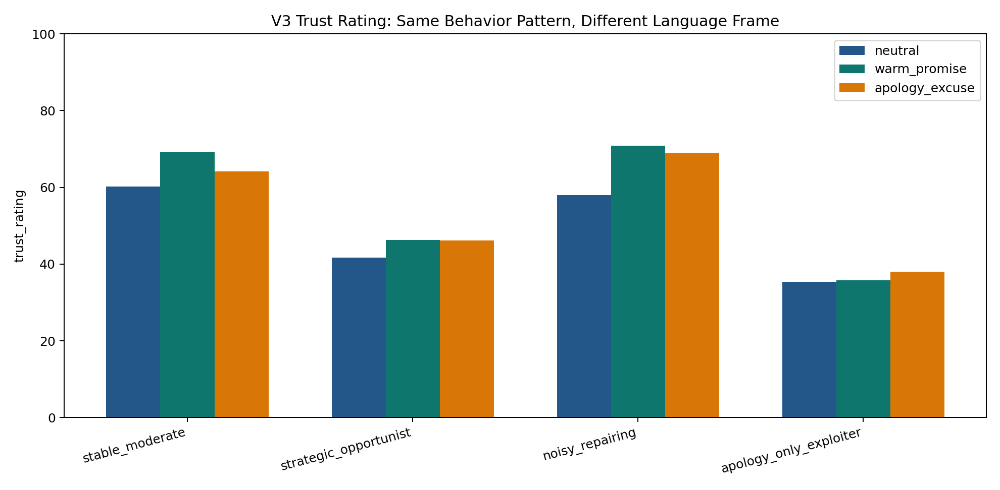
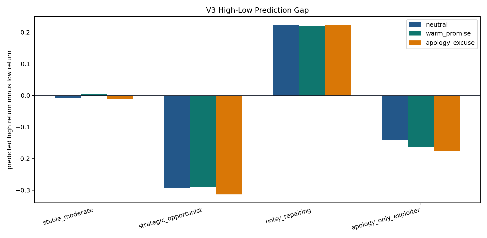
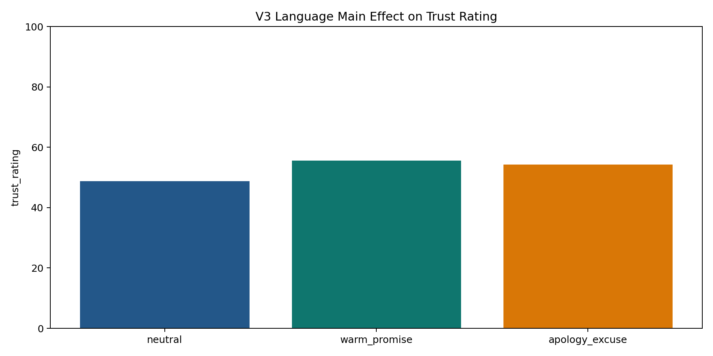
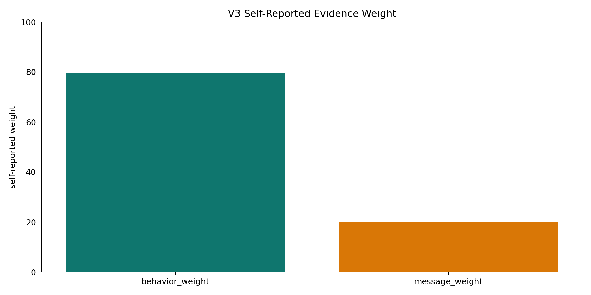

V3 crosses behavior pattern and language frame. Every observed history has average return 0.40, but individual return fractions are noisy. This tests whether language changes trust or prediction after behavior is controlled.
Successful calls: 72 / 72.




| Behavior | Language | N | Observed return | Observed low | Observed high | Trust | Pred low | Pred high | High-low gap | Message weight | Behavior weight |
|---|---|---|---|---|---|---|---|---|---|---|---|
| stable_moderate | neutral | 6/6 | 0.4 | 0.4 | 0.393 | 60.167 | 0.401 | 0.392 | -0.009 | 22.5 | 77.167 |
| stable_moderate | warm_promise | 6/6 | 0.4 | 0.401 | 0.402 | 69.167 | 0.399 | 0.403 | 0.005 | 21.667 | 78.333 |
| stable_moderate | apology_excuse | 6/6 | 0.4 | 0.406 | 0.394 | 64.167 | 0.407 | 0.397 | -0.01 | 19.167 | 80.833 |
| strategic_opportunist | neutral | 6/6 | 0.4 | 0.549 | 0.253 | 41.667 | 0.547 | 0.253 | -0.294 | 7.5 | 84.167 |
| strategic_opportunist | warm_promise | 6/6 | 0.4 | 0.549 | 0.26 | 46.333 | 0.549 | 0.259 | -0.291 | 17.5 | 82.5 |
| strategic_opportunist | apology_excuse | 6/6 | 0.4 | 0.554 | 0.242 | 46.167 | 0.553 | 0.24 | -0.313 | 20.833 | 79.167 |
| noisy_repairing | neutral | 6/6 | 0.4 | 0.297 | 0.496 | 58 | 0.303 | 0.525 | 0.222 | 18.333 | 80 |
| noisy_repairing | warm_promise | 6/6 | 0.4 | 0.298 | 0.495 | 70.833 | 0.357 | 0.577 | 0.22 | 20.833 | 80 |
| noisy_repairing | apology_excuse | 6/6 | 0.4 | 0.294 | 0.506 | 69 | 0.335 | 0.558 | 0.223 | 22.5 | 77.5 |
| apology_only_exploiter | neutral | 6/6 | 0.4 | 0.493 | 0.302 | 35.333 | 0.423 | 0.282 | -0.142 | 21.667 | 86.667 |
| apology_only_exploiter | warm_promise | 6/6 | 0.4 | 0.495 | 0.293 | 35.833 | 0.422 | 0.259 | -0.163 | 25 | 71.667 |
| apology_only_exploiter | apology_excuse | 6/6 | 0.4 | 0.496 | 0.299 | 38 | 0.457 | 0.28 | -0.177 | 24.167 | 76.667 |